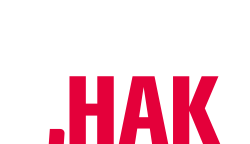

HaK

Be first in management
Go digital native
You can do it.
gemeinsam
zukunft bilden.
zukunft bilden.
Our spirit our goals
Wir freuen uns, dass du dich für die JO.HAK interessierst. Die HAK ist eine berufsbildende höhere Schule. Sie dient der kaufmännischen Berufsausbildung für alle Zweige der Wirtschaft und des öffentlichen Dienstes. Die Wirtschaft braucht DICH! Nach dem Besuch der HAK bist du für dein Berufsleben bestens gerüstet. Wirtschaftskompetenz, beste IT-Kenntnisse, mehrsprachige Kommunikation und fundierte Allgemeinbildung machen dich zu einer gefragten Mitarbeiterin/einem gefragten Mitarbeiter.
news
termine
eu-logo